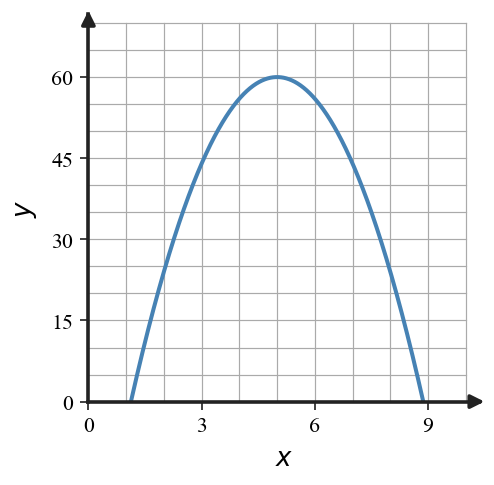

Mathematical idea: Efficient solving depends on what form and features the quadratic already shows.
Today you will connect quadratic equations, graphs, and contexts. You will practice solving and explaining what the solutions or features mean.
Learning Target: Students will compare factoring, completing the square, and the quadratic formula and select efficient solution methods.
I can statements
This is a long-range preview for future lessons. Do not solve it today. Instead, annotate it individually. Circle anything familiar, underline symbols or directions that seem important, and write notes about what information you think will be needed later.
As you annotate, ask yourself: What parts (words, symbols, graphs) do you KNOW? What parts look FAMILIAR? What parts look like jibberish?
Revise A Flawed Model. Create or revise a quadratic task for Choosing and Defending Solution Methods using the constraints below.
A student claims the provided graph is modeled by $y=4(x-5)^2+60$ and recommends factoring. Revise the model so it matches the graph's maximum, choose an efficient solving method for the intercepts, and defend your choice.

Directions
Read the introduction aloud with a partner or in a small group. As you read, annotate the text by highlighting important ideas, circling key vocabulary, and writing short notes about connections, questions, or predictions in the margins.
Quadratic equations can be solved in several ways, including factoring, square roots, completing the square, and the quadratic formula. The first step is to look at the structure of the equation. Factored form, vertex form, and standard form give different clues.
Factoring is efficient when factors are easy to see. Square roots are efficient when the equation already has a squared expression isolated. The quadratic formula is reliable when the structure is not friendly for a faster method.
Completing the square is useful when vertex form or symmetry is important. It can also solve equations, but it may be slower than factoring when factors are obvious. Method choice should fit the equation and the goal.
A critique checks whether the selected method matches the equation. It also checks whether the work is accurate and whether the result should be exact or approximate. A poor method choice can create unnecessary steps or hide an error.
This lesson emphasizes defending choices, not just getting answers. Strong work explains why a method fits the structure and then solves carefully.
Stop and Discuss
Start by noticing the structure before choosing a method.
Use zero product property.
Use square roots.
Try factoring.
Use formula or complete the square.
Choose the most efficient method: factoring, square roots, completing the square, or quadratic formula.
Briefly justify each choice.
Choose the most efficient method: factoring, square roots, completing the square, or quadratic formula.
Briefly justify each choice.
Stop and Discuss
If integer factors are easy to find, factoring is usually efficient.
$$x^2-13x+40=0$$ $$(x-5)(x-8)=0$$| Method choice | Reason |
|---|---|
| Factoring | Two integers multiply to $40$ and add to $-13$. |
The method fits because the standard-form structure has obvious integer factors.
Select a method and solve $x^2-13x+40=0$.
Select a method and solve $x^2-10x+21=0$.
Stop and Discuss
Some equations do not factor easily but still have exact real solutions.
$$x^2+6x-5=0$$ $$(x+3)^2=14$$ $$x=-3\pm\sqrt{14}$$Completing the square is efficient here because the leading coefficient is $1$ and the middle coefficient is even.
Select a method and solve $x^2+6x-5=0$ exactly.
Select a method and solve $x^2-4x-8=0$ exactly.
Stop and Discuss
A method critique asks whether the equation structure supports the chosen method.
$$0=(x-3)^2+5$$Factoring is not efficient because the expression is already in vertex form. Since $(x-3)^2$ is always at least $0$, $(x-3)^2+5$ cannot equal $0$.
| Feature | Meaning |
|---|---|
| Vertex | $(3,5)$ |
| Minimum value | $5$ |
| Real zeros | none |
Analyze $y=(x-3)^2+5$. Without expanding first, decide whether $0=(x-3)^2+5$ has real solutions and justify.
Analyze $y=(x+2)^2-9$. Without expanding first, decide whether $0=(x+2)^2-9$ has real solutions and justify.
Stop and Discuss
Today you compared quadratic solving methods and defended efficient choices.
Equation structure should guide the method: factored form, vertex form, standard form, and isolated squares each suggest different paths.
A common error is using a familiar method even when the structure suggests a faster one.
Strong understanding means you can choose, solve, critique, and explain why the method fits.
Look back at the future task. Do not solve it yet. Highlight one part that makes more sense now than it did at the beginning. Circle one part that still feels unfamiliar. Write one sentence about what representation you would look at first.
Choose factoring, square roots, completing the square, or quadratic formula as the most efficient method.
Solve or interpret the quadratic situation for Choosing and Defending Solution Methods. Show the algebra that supports your answer.
Select a method and solve $x^2-11x+30=0$.
What is one idea about choosing quadratic solution methods you understand better now than at the start of class? Write at least one complete sentence.
What is one thing about choosing quadratic solution methods you still want to understand or practice? Be specific — name the idea, not just "everything."